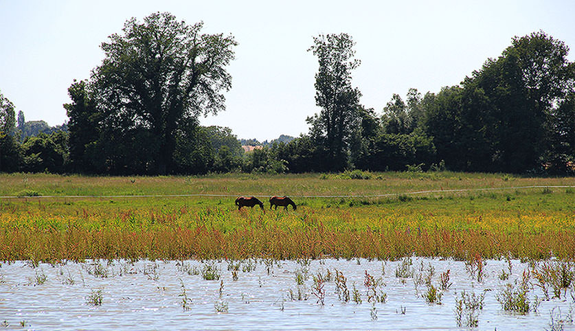
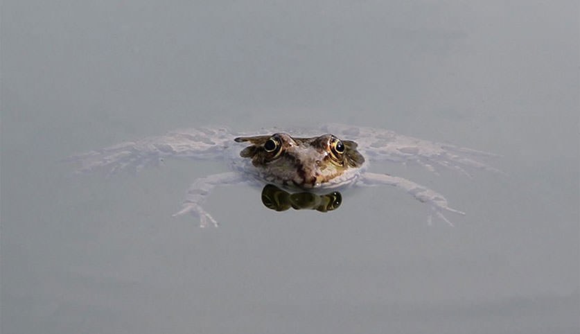
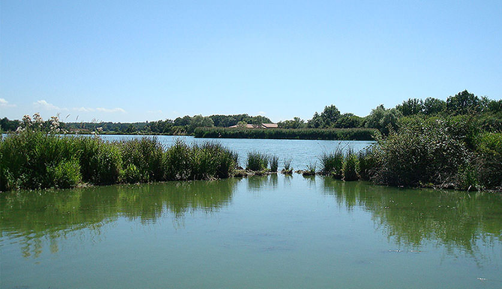
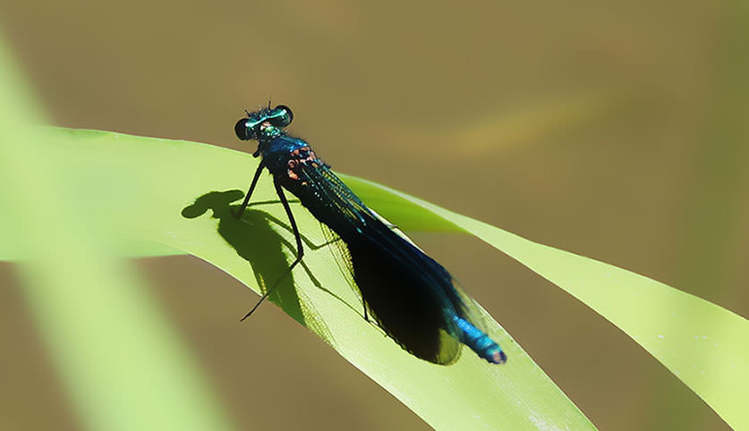
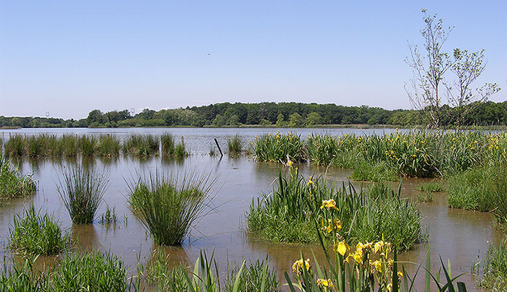
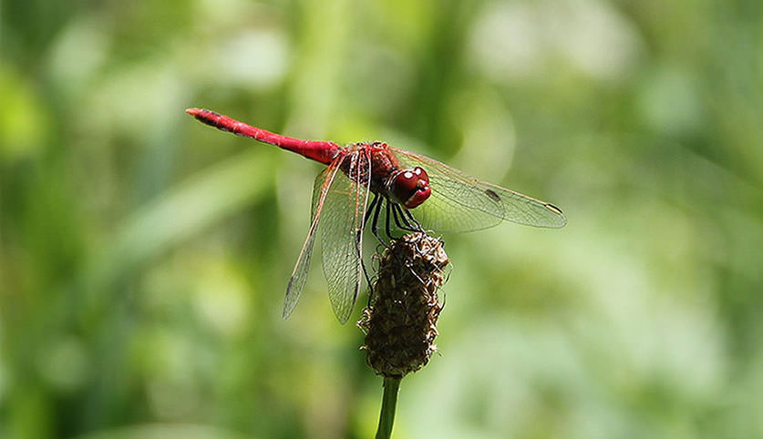

SANDRINE ANGELIBERT
Docteur en Sciences
Sympetrum striolatum (Haute-Savoie) © Sandrine Angélibert

Domaine de Guidou (Haute-Savoie) © Sandrine Angélibert

Pelophylax ridibundus (Haute-Savoie) © Sandrine Angélibert

Etang du Forez (Loire) © Sandrine Angélibert

Calopteryx splendens (Haute-Savoie) © Sandrine Angélibert

Etang de la Dombes (Ain) © Sandrine Angélibert

Sympetrum fonscolombi (Haute-Savoie) © Sandrine Angélibert
Depuis mon enfance où j’essayais de capturer les cigales à la main sur les Causses du Quercy jusqu’à aujourd’hui, j’ai
toujours été passionnée de biologie et d’écologie. Comprendre, apprendre et transmettre pourrait être ma devise.
Comprendre l’importance des interactions entre les êtres humains et les autres êtres vivants ; apprendre et m’enrichir
en approfondissant mes connaissances des mécanismes naturels ; transmettre pour sensibiliser et informer sur les enjeux
actuels en matière d’alimentation, de santé, de climat, de biodiversité…